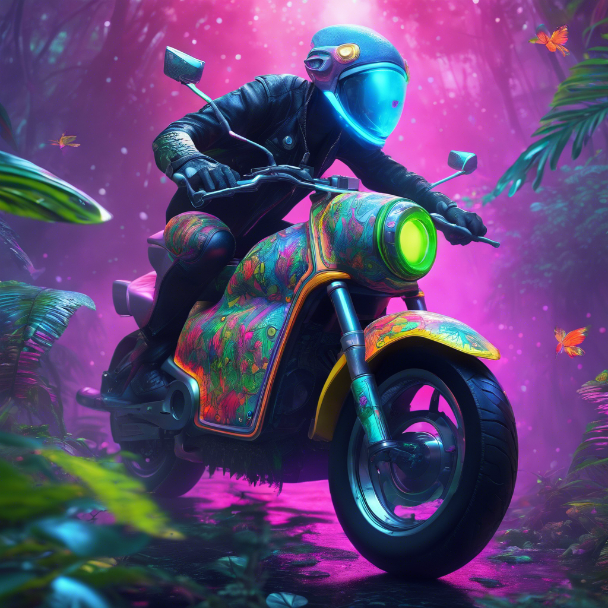
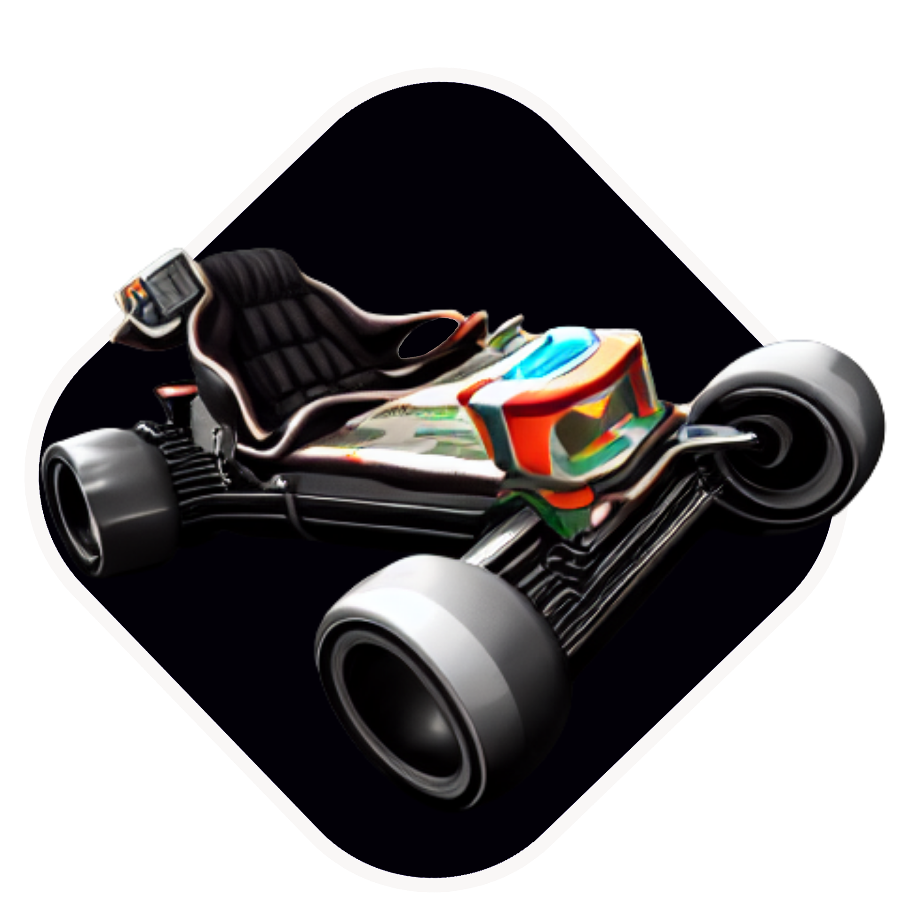
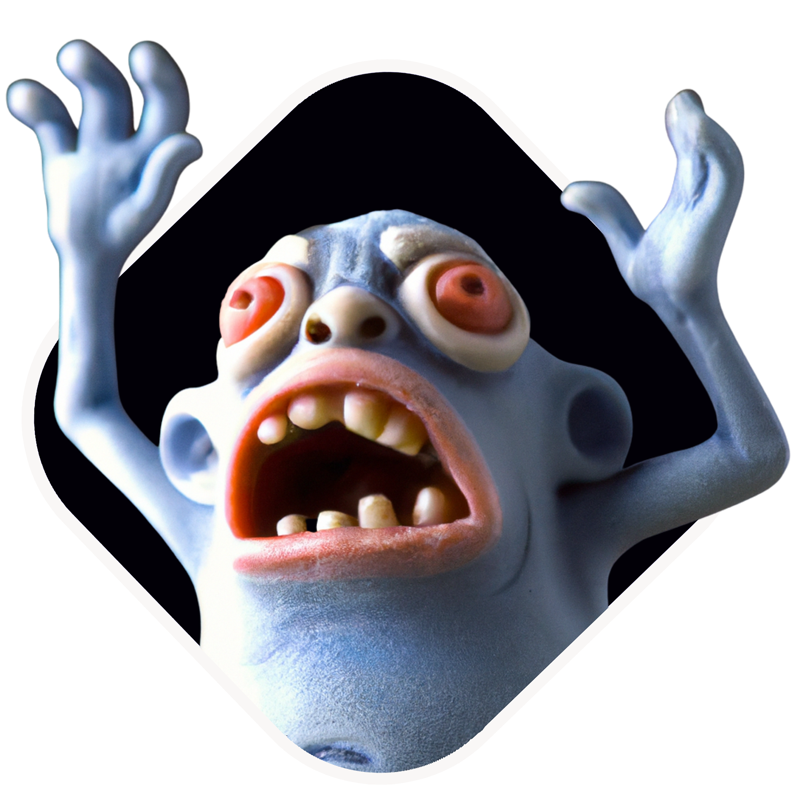
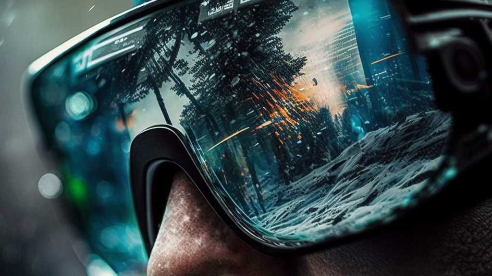
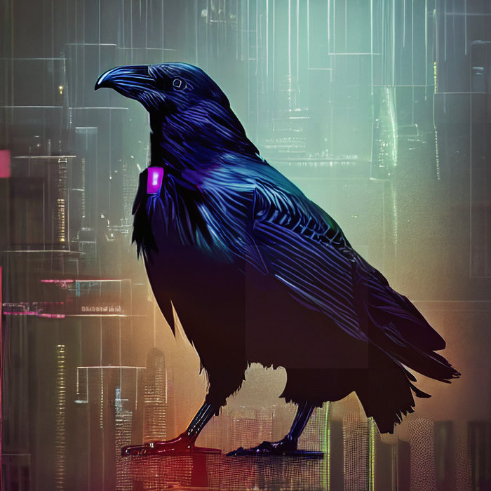

INTERACTIVE EXPERIENCE / WALKTHROUGH
GIF ↓Trinkets ↗
An interactive museum of original sound, artwork, and animation.
Step inside the work.
An interactive museum of original sound, artwork, and animation.

An original output from the creative toolkit.

Original artwork for a musical karting prototype.

Game artwork for a side-scrolling music experience.

Portfolio cover. Past contract work with Rock Paper Reality.

Original release artwork. Watch the music video.
The animated project previews from my GitHub profile.